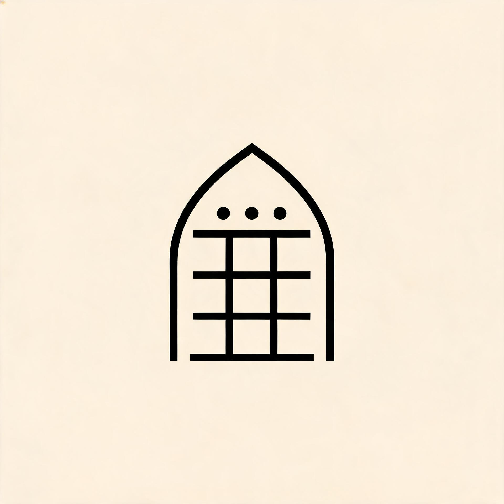
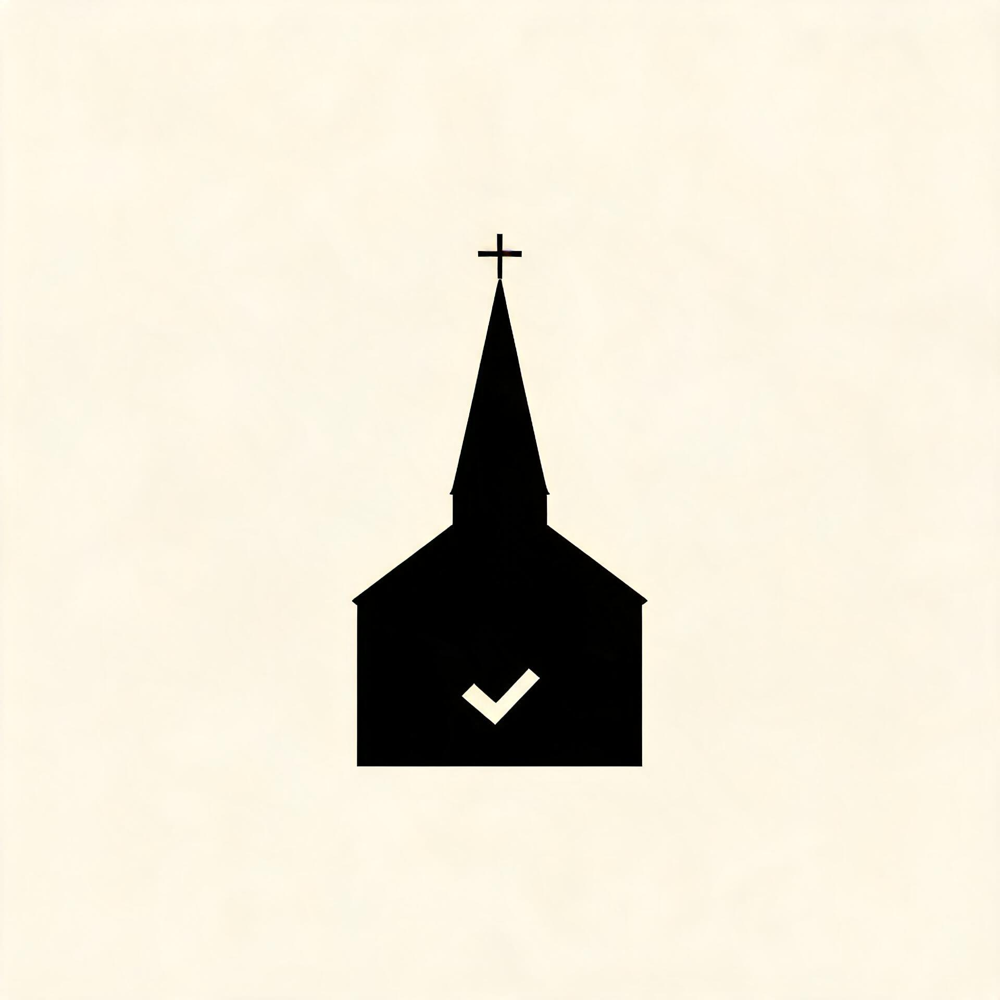
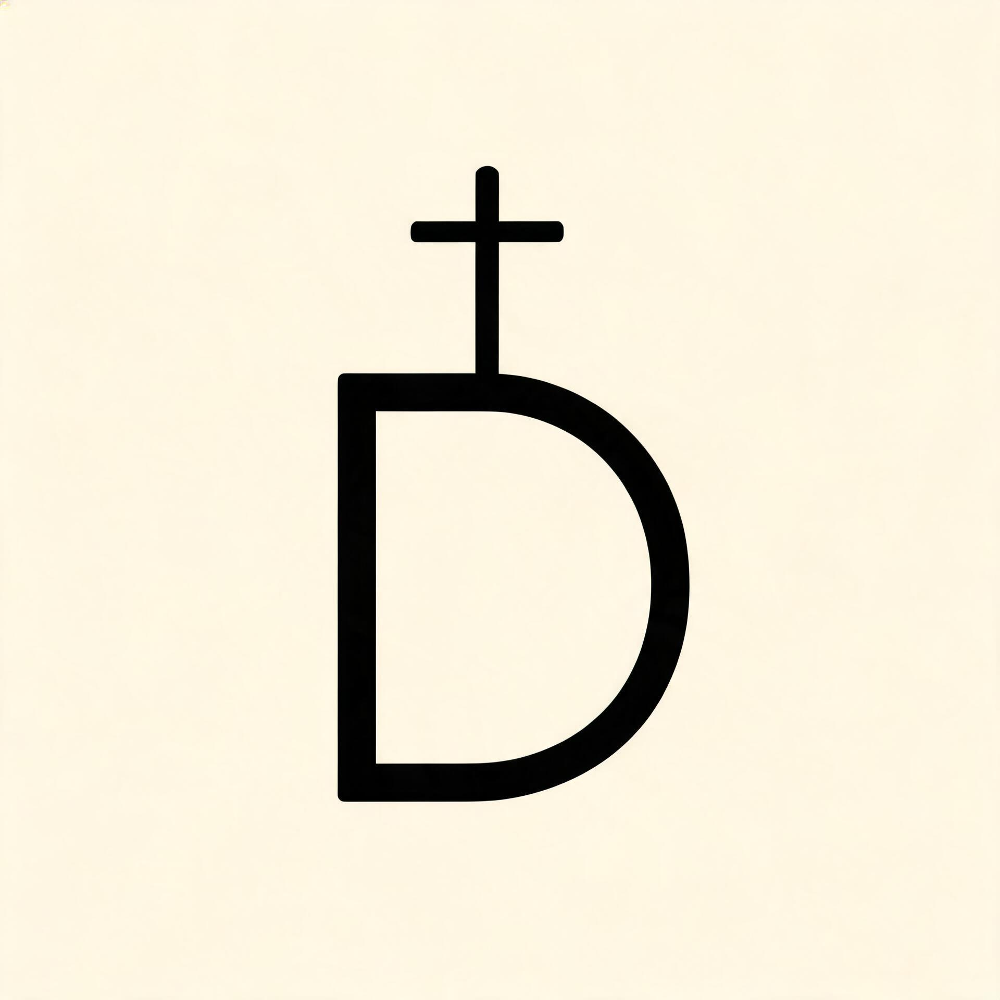
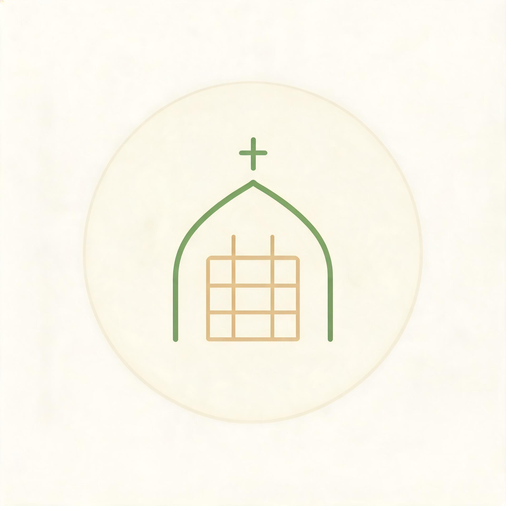
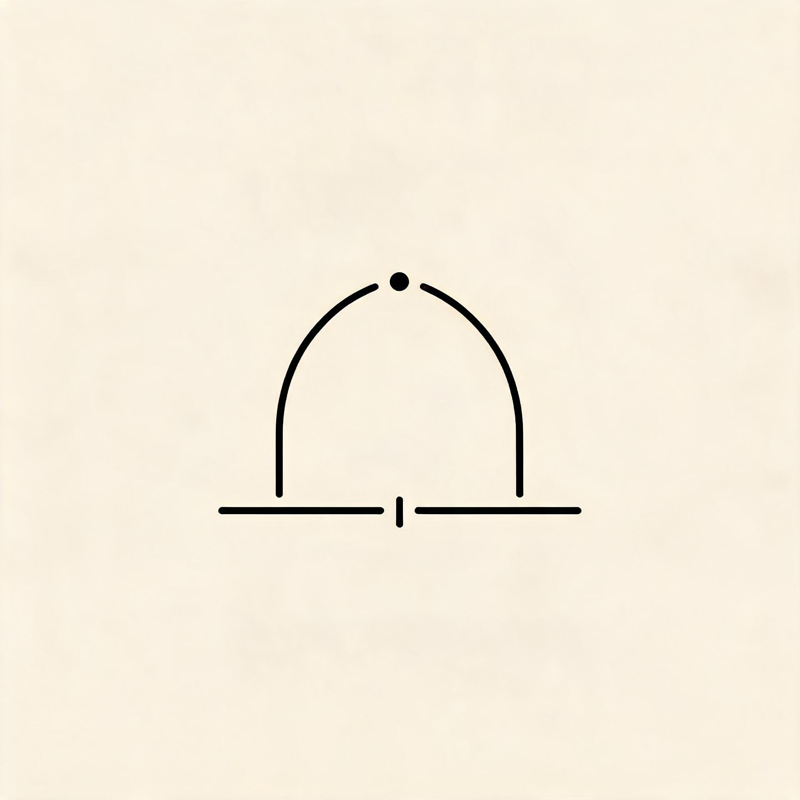
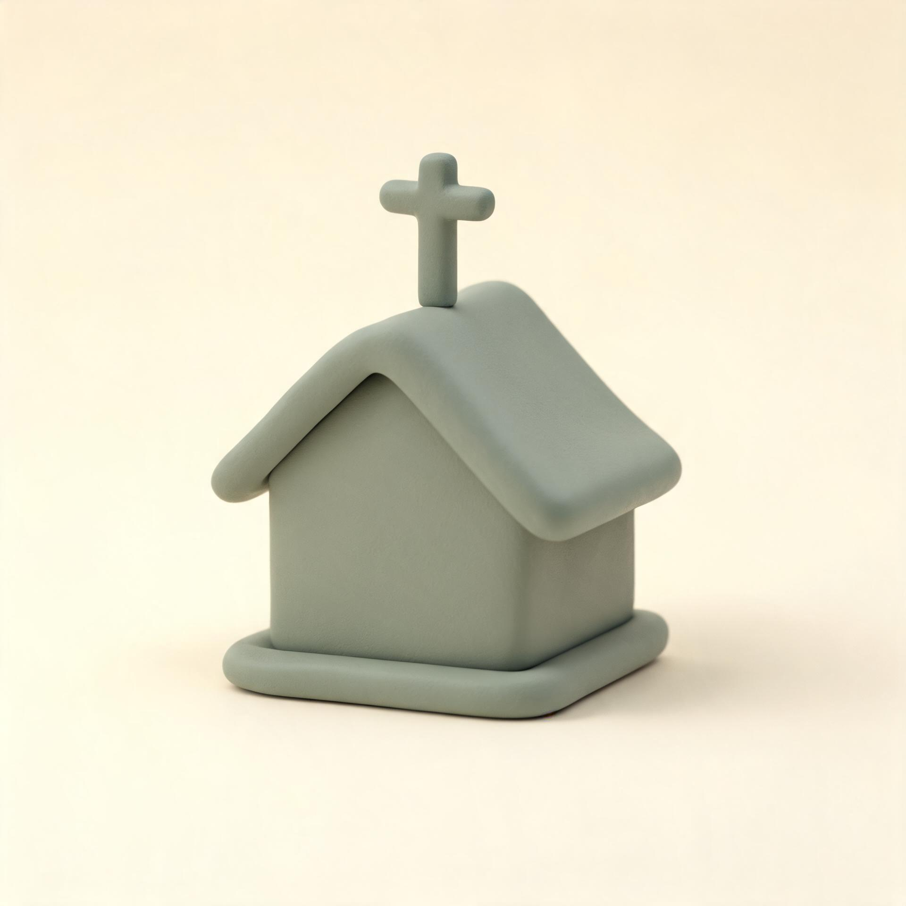
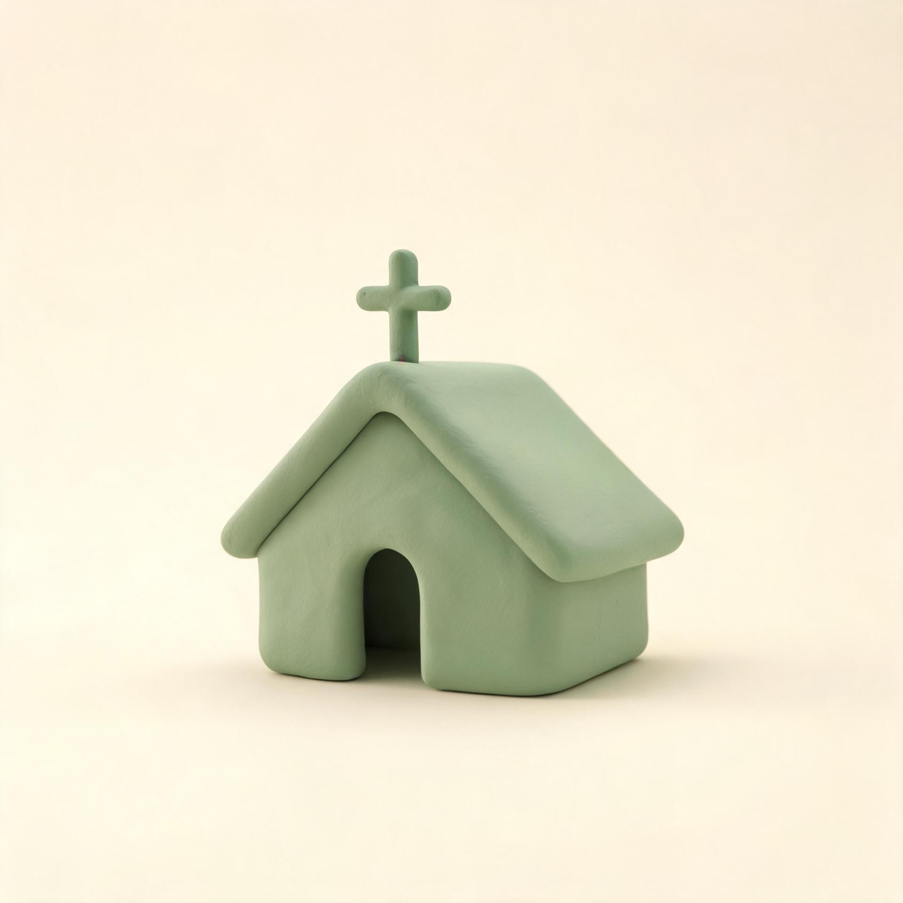
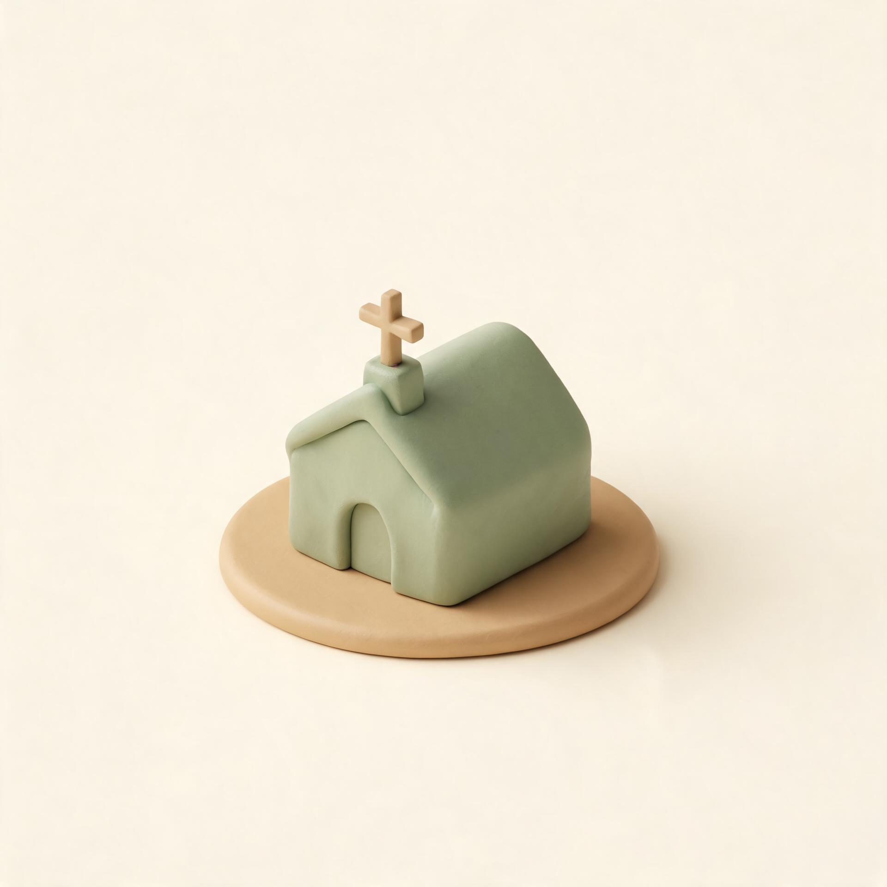
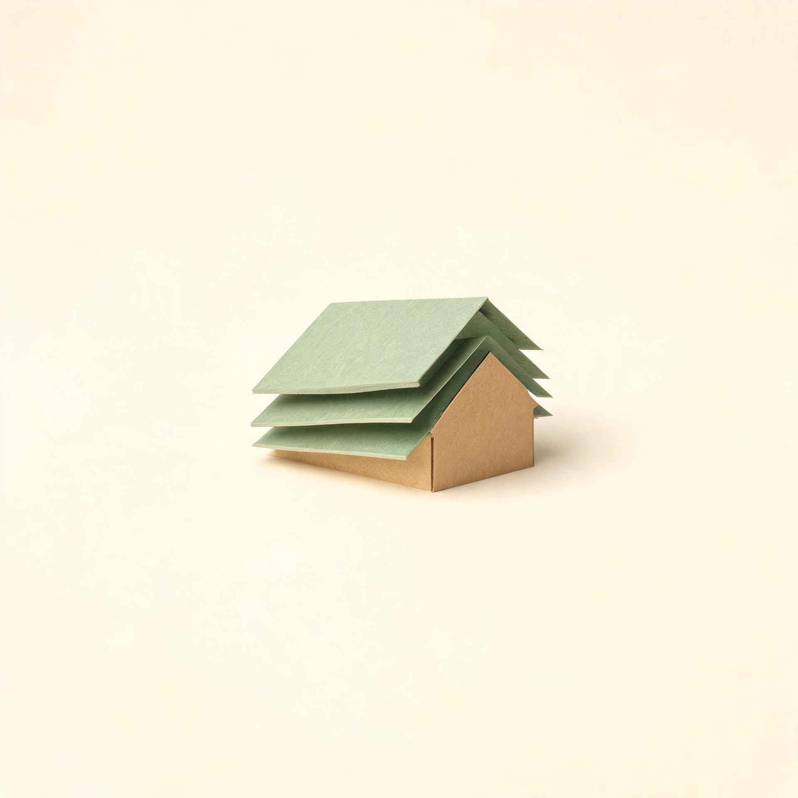
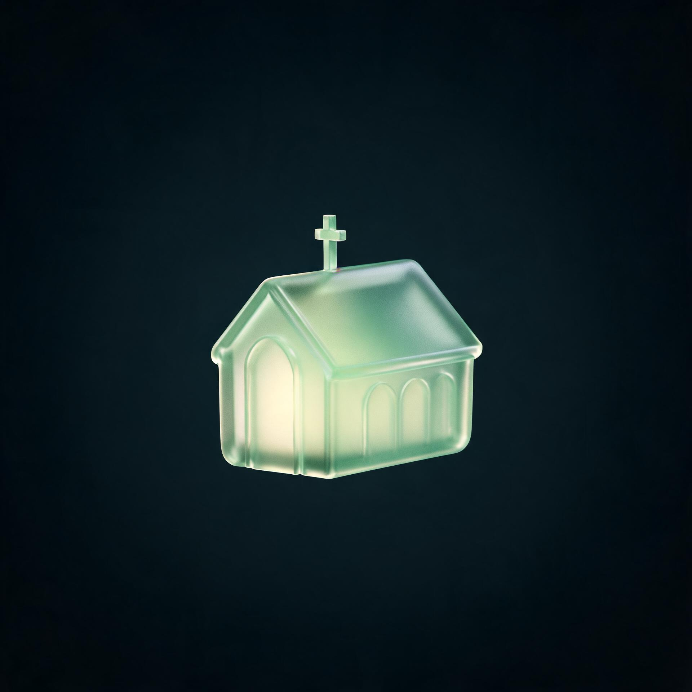

六套方向，其中 A–E 为单色线稿 / 剪影方向，F 为 3D 材质方向。每张卡片下方附 64 / 40 / 24 像素实际尺寸预览， 用于检查缩小后的识别度。方案 F 的四个扩展方向见页面下半部分。






保持 F 的「哑光黏土单件小教堂 + 米色工作室背景 + 极简构图」基调，在呈现技术、场景承载和应用侧重上拉开差距。 四者不是并列美化，而是分别服务不同的落地目标：图标可用性、品牌叙事、可矢量化与周边延展、深色高端定位。




| 方案 | 侧重 | 适用场景 | 优势 | 权衡 | 复杂度 |
|---|---|---|---|---|---|
| F1 正面黏土小屋 | 图标可用性 | 应用图标、tabBar、通知图标、商店图标 | 形最简、负空间干净；一套渲染即可覆盖 1024→24 全尺寸；最接近"就这么用"的状态 | 叙事性弱于 F2；米色底需去掉才能用于深色系统栏；细微黏土纹理在缩小后会丢 | 低 |
| F2 沙色台座微缩 | 品牌叙事 | 启动页、商店配图、关于页插画、宣传物料 | 有台座和双材质，画面完整度高；可延展成一组"同一台座上的不同物件"的系列图 | 细节多，24px 下台座与屋身糊成一块；必须额外裁一版纯图标，等于两套资产 | 中 |
| F3 分层卡纸屋顶 | 可矢量化 / 周边 | 网页 logo、印刷品、贴纸与实体周边、浅色 UI | 结构本身就是分离图层，能直接转 SVG 分层并保留投影；缩放无损，做单色版只需合并路径 | 当前生成稿缺少十字，需要补；侧视角下门洞不可见，语义靠屋顶形状支撑 | 中 |
| F4 磨砂玻璃微光 | 深色 / 高端 | 深色模式图标、夜间启动页、高客单定位的品牌页 | 唯一自带深色背景，暗色环境里光感突出；材质语言现代，与"安静专注"的产品调性契合 | 浅色 UI 里需要另行重做浅色版本；玻璃需真实 3D 渲染，AI 出图难以逐尺寸稳定复现 | 中高 |